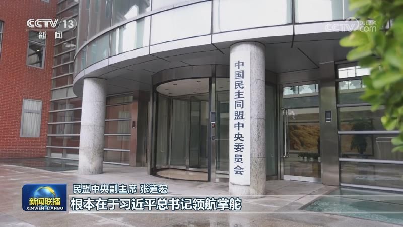
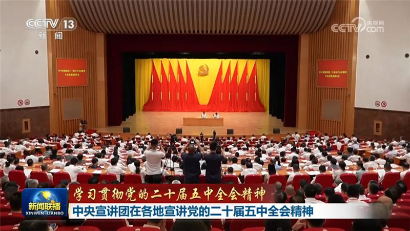
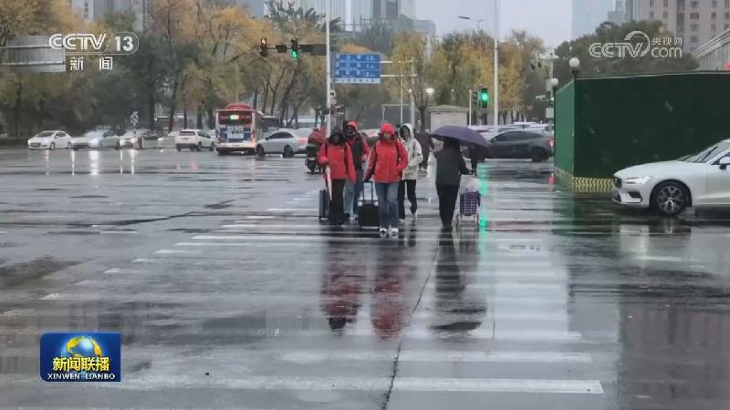
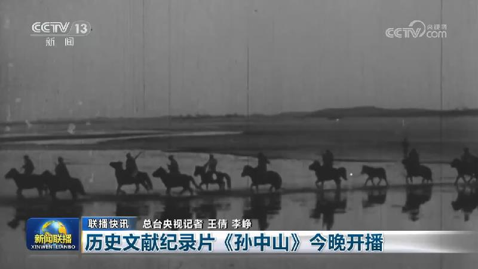
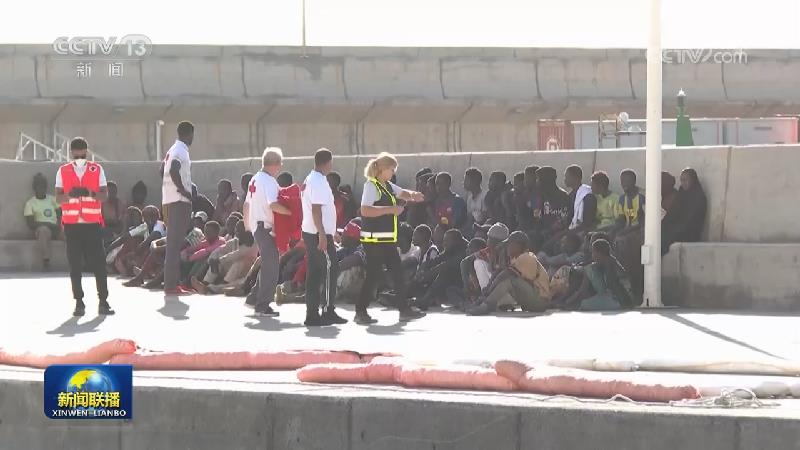

01

【学习贯彻党的二十届五中全会精神】同心同行强根基 从严从实担使命
中共二十届五中全会对持之以恒推进全面从严治党作出战略部署，在各民主党派中央、全国工商联和无党派人士中引发热烈反响。大家表示，要深入学习贯彻全会精神，始终同以习近平同志为核心的中共中央保持高度一致，坚守多党合作初心，广泛凝聚共识，为以中国式现代化全面推进强国建设、民族复兴伟业贡献智慧和力量。


中共二十届五中全会对持之以恒推进全面从严治党作出战略部署，在各民主党派中央、全国工商联和无党派人士中引发热烈反响。大家表示，要深入学习贯彻全会精神，始终同以习近平同志为核心的中共中央保持高度一致，坚守多党合作初心，广泛凝聚共识，为以中国式现代化全面推进强国建设、民族复兴伟业贡献智慧和力量。
港澳台人士表示，中国共产党二十届五中全会意义深远、令人振奋，他们愿以实际行动为国家的高质量发展、为中华民族伟大复兴贡献力量。
当地时间11月6日至8日，应格鲁吉亚政府邀请，国家副主席韩正访问格鲁吉亚，在第比利斯分别会见格鲁吉亚总统卡韦拉什维利、总理科巴希泽。

连日来，学习贯彻党的二十届五中全会精神中央宣讲团成员在海南、陕西、河南等地宣讲，并深入基层与干部群众交流，推动全会精神学习走深走实。
近日，中央组织部负责人就做好二十一大代表选举工作有关问题，接受了新华社记者的采访。
眼下，我国秋粮收购正陆续展开，累计收购秋粮超1亿吨，进度与上年基本持平。国家粮食和物资储备局最新调度显示，目前，秋粮收购开局平稳，已收中晚稻4100多万吨，玉米、大豆正集中上市；东北地区陆续上量。
第九届中国国际进口博览会的贸易投资对接会、重要采购商选品会等各项配套活动全面展开，展客商对接洽谈热烈。

从昨天（11月7日）到今天，内蒙古、河北、山西、辽宁等地出现降雪、雨夹雪天气。辽宁葫芦岛普降暴雪、大暴雪，葫芦岛连夜开展城区除雪保畅工作，目前已累计出动作业人员近2000人次，各类除雪清运设备约160台（套）。为应对强降雪，河北秦皇岛、迁安等地在城区主干道昼夜开展除雪作业；供热部门启动供热，动态调整参数，保障居民室内温度正常。中央气象台预计，北方降水今天起迅速缩减。……

我国首批33个和美海岛建设取得阶段性成效
伊朗伊斯兰革命卫队今天（11月8日）凌晨发表声明说，两艘试图违规通过霍尔木兹海峡的油轮稍早前触雷起火。声明说，这两艘油轮在违规同时，关闭了导航和定位系统。

以总统将授权反对党领导人组建新政府